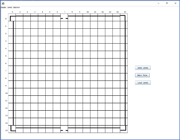

Aims
The aim of this project is to produce a game that can be published. We would aim to publish the game on indieDB and itch.io. In order to put this aim within our reach, we have some goals to complete:
Paper Prototype of Game.
The paper prototype will allow us to experiment with the game’s mechanics and visual design. As the pieces are made from paper, and the movement is controlled by hand, changing a mechanic is as simple as moving your hand differently, or doing steps in a different sequence. We can slow the game play down so that the design and back-end mechanics are easier to comprehend. Experiencing the mechanics in this way will allow us to embody the players of our game and find which variations of the mechanics are most fun. Visualising the mechanics like this will help us to more quickly grasp the steps that need to be converted into code.
Coded Prototype of Game.
Coded prototypes are the final stage of pre-production in game development. Digital prototyping is useful because it allows you to check the functionality, gameplay, and design of the game before full production. Being digital, these can be shared easily with a group of people. In a workplace environment this would be essential, saving time and money by testing a projects likeliness of success before committing to a full production schedule.
Prototype of Level Creator
A coded prototype of the level creator will allow the rapid production of levels should the project continue further. This will also allow the testing of levels and level files and can contribute to the discussion of which features should be included in levels.
ScopeExperimenting with prototypes will allow us to decide which features to include in the scope of our first release. There are core features that the game cannot exist without, and there are features which will add to the various modes of fun that players can have with the game. There are features that will affect the players pleasure when interacting with our game such as visual design and interface, and there are features that will affect the longevity of our game, such scoring, levels and speed.
Testing
Testing will be part of the coding process all the way through, but our final release will need to be fully tested before it is published. Releasing a buggy game can affect the enjoyment players will experience when playing our game.